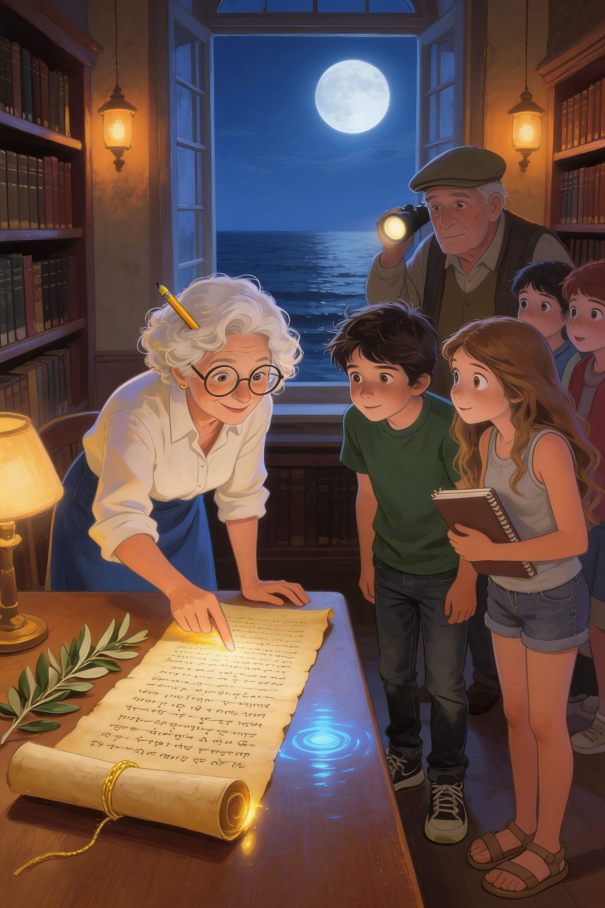
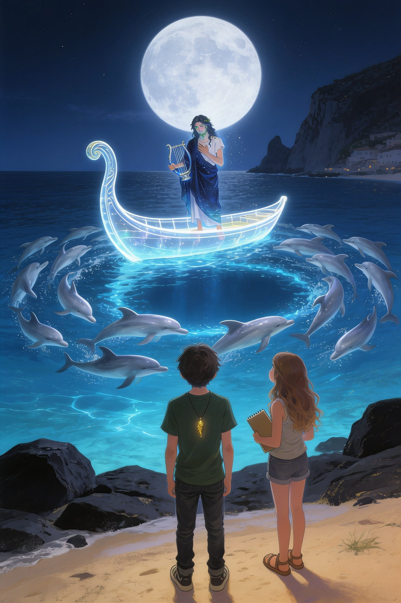
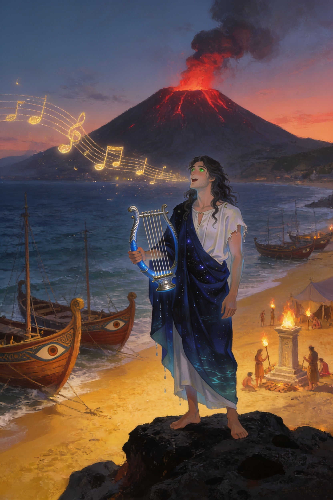
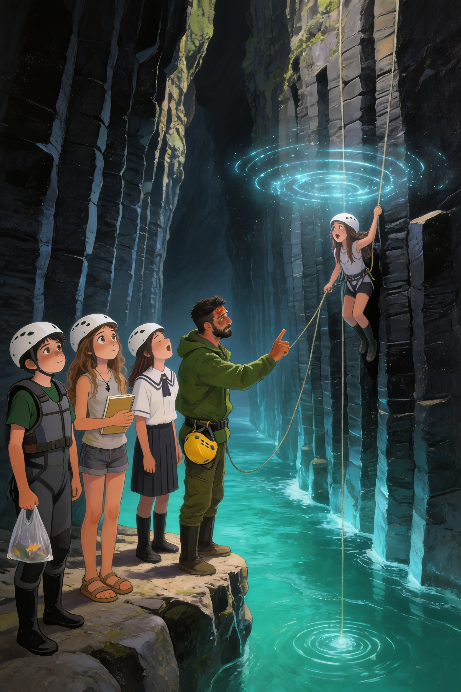
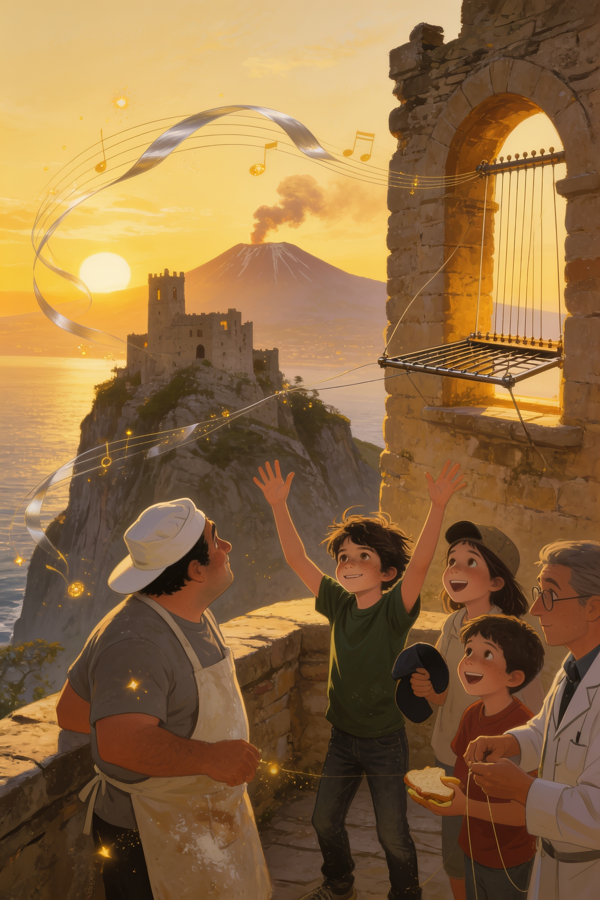

Il signor Nino non aveva dormito. Si vedeva dalle occhiaie, dal cappello messo al contrario e dal modo in cui teneva il rotolo di papiro, con due mani, come si tiene una cosa che potrebbe esplodere.
— L'ho trovato ieri notte, sul palco del Teatro Antico — disse a Vlad e a Ludovica, seduti sulla panchina nuova, sotto il pino. — Ho portato a casa il papiro e non l'ho aperto. Le impronte bagnate, invece, erano asciutte stamattina. Come se non ci fossero mai state.
— Ci sono le foto? — chiese Ludovica.
— Le ho fatte. Ma nelle foto non si vede niente. Soltanto il legno.
Posò il rotolo sulle ginocchia di Vlad. Il filo d'oro che lo legava brillava piano, come se fosse caldo.
— Voi sapete cose che io non so. Io so soltanto che stanotte, mentre chiudevo, ho sentito una musica che non è di questo secolo.
Alle sei di sera, con il buio già sceso e la luna piena alta sul mare, la Squadra Etna era di nuovo in biblioteca, con il papiro aperto sul grande tavolo di legno e la professoressa Siligato in piedi accanto a loro, con gli occhiali sulla punta del naso.
— Posso? — chiese, e sfiorò il papiro con un dito. — Sapete, io insegno italiano. Ma il greco antico l'ho studiato per anni, all'università, e ogni tanto, fortunatamente, serve ancora.
Si chinò sulle lettere antiche, con le labbra che si muovevano. Dopo qualche minuto, lesse a mezza voce:
— «Il primo atto è finito. Il secondo comincia.»
— Questo lo avevamo già letto — disse Thomas.
— Ma c'è altro. — La prof proseguì, con la voce sempre più bassa. — «Quando la luna avrà mangiato se stessa, la mia lira dirà l'ultima nota, e il gigante si sveglierà, e nessuno lo fermerà. Il Custode dell'Alba venga al mare di Naxos, a Capo Schisò, e ascolti la Notte.»
Un silenzio di vetro cadde sulla biblioteca. Fuori, dalla finestra, si vedevano la luna piena e, sotto, il mare nero.
— Capo Schisò — ripeté Vlad, piano. — È dove è caduta la stella.
— Dove hai trovato la Piuma — disse Ludovica, che aveva già aperto il quaderno. — Non può essere una coincidenza.
— Niente è una coincidenza, in questa storia — mormorò Wijdane.
La prof Siligato si tolse gli occhiali e li pulì con la manica.
— Naxos fu la prima colonia greca di Sicilia — spiegò. — Fondata nel 734 prima di Cristo, proprio dove oggi c'è Giardini Naxos. Arrivarono con le navi, e portarono gli dèi, i teatri, e le canzoni.
— E il «Custode dell'Alba»? — chiese Sofia.
— Credo sia Vlad — rispose la prof, con un sorriso un po' triste. — L'alba è il sole. La Piuma. Chi scrive questo conosce il tuo nome meglio di me.
— E «la Notte»? — chiese Simone. — Chi è la Notte?
Nessuno rispose. Ma Vlad sentì il ciondolo battere sul petto, due volte. Come se anch'esso avesse una domanda.

«Il Custode dell'Alba venga al mare di Naxos.»
— C'è un'altra cosa — disse Manuela, e tirò fuori dallo zaino un quaderno pieno di righe e di numeri. — Da una settimana registro le scosse dell'Etna. Ho usato l'applicazione di Thomas e il sismografo del museo.
Aprì una pagina e la girò verso il gruppo.
— Guardate. Di giorno, quasi niente. Piccole scosse, molto lontane, impossibili da sentire. Di notte, invece, cominciano alle due e sette minuti. Ogni notte, un po' prima e un po' più forti.
— Come un orologio — mormorò Thomas.
— Come un cuore che accelera — disse Reyana.
Wijdane chiuse gli occhi e ragionò a voce alta.
— Di giorno c'è la Piuma. Il sole, la luce. Di notte non c'è niente a tenerlo calmo. Ma una volta, durante la notte, c'era qualcosa. Altrimenti il gigante si sarebbe svegliato duemila anni fa.
— Qualcuno cantava — sussurrò Mia. — Ogni notte.
Si guardarono. Per la prima volta, nessuno aveva voglia di ridere.
— E poi c'è il mare — disse Aurora. Aprì il telefono e girò lo schermo verso gli altri.
In una fotografia, scattata di notte dal lungomare di Giardini Naxos, la baia era piena di una luce azzurra. Non una luce di lampioni: una luce che veniva dall'acqua, sottile e viva, come se sotto il mare ci fosse una città addormentata.
— Da tre notti — disse. — I pescatori ne parlano al bar. Dicono che ci sono centinaia di delfini. Arrivano di sera, nel golfo, e restano in cerchio fino all'alba.
— Capo Schisò, il golfo di Naxos, i delfini, la lira. Sta succedendo tutto nello stesso posto.
Quella sera, in cucina, nonna Tanya ascoltò il racconto con il cucchiaio di legno fermo sul bordo della pentola.
— Arione — ripeté piano. — Lo ricordo, questo nome. Lo diceva mia nonna, quando ero bambina. Le fiabe russe parlano dell'Uccello di Fuoco, ma la nostra famiglia conservava anche una frase greca, che passava di generazione in generazione.
— Quale? — chiese Vlad.
— «Se senti una lira nel vento, non rispondere finché non sai chi la suona.»
Vlad guardò il ciondolo, che brillava piano sul tavolo.
— Ma se è un amico? Se anche lui è uno che è rimasto indietro?
La nonna lo guardò a lungo.
— Hai il cuore giusto, Vladik. È per questo che la Piuma ti ha scelto. Ma un cuore giusto non basta, serve anche la testa. Andrai. Lo so che andrai. Ma andrai con la Piuma al collo, con Ludovica accanto e con me nel furgone, a dieci metri.
— Stanotte?
— Stanotte c'è la luna piena. Se qualcuno ti chiama, vuole che tu vada stanotte.
A mezzanotte meno dieci il vecchio furgone di nonna Tanya si fermò sul lungomare di Giardini Naxos, con i fari spenti.
La luna piena stava alta sul golfo e metteva una strada d'argento sull'acqua. Il mare, davvero, brillava di una luce azzurra e profonda, che non veniva né dal cielo né dai lampioni. Lontano, sulla punta della baia, si vedevano le rocce nere di Capo Schisò, come il dorso di un animale addormentato.
— Io resto qui — disse la nonna, con il thermos in grembo. — Dieci metri. Non uno di più.
Vlad e Ludovica scesero sulla sabbia. Non c'era nessuno. Il vento era caduto, e le onde arrivavano piano, una dopo l'altra, come se contassero fino a dieci.
Poi, in mezzo al mare, a cinquanta metri dalla riva, uno spruzzo argenteo salì verso la luna.
Un delfino. E dietro di lui un altro, e un altro ancora.
— Vlad — sussurrò Ludovica, e gli strinse il braccio. — Guarda.
✦ ✦ ✦
Il Custode dell'Etna · Libro 3
Capitolo 2
La notte dei delfini
✦ ✦ ✦
I delfini arrivarono a decine, poi a centinaia. Sbucavano dall'acqua nera uno dopo l'altro, con il dorso lucido come d'argento, e nuotavano in cerchio al centro della baia, sempre più stretti, come i petali di un fiore che si chiude.
Il mare, sotto di loro, si accese. Un chiarore azzurro salì dal fondo, e la superficie cominciò a brillare come un cielo capovolto, pieno di stelle.
— Non ho mai visto niente di così bello — sussurrò Ludovica.
— Neanch'io — disse Vlad. Sentiva la Piuma battere sul petto, forte e calda. — Ma qualcuno ci sta chiamando.
Una musica leggerissima si mescolò al rumore delle onde. Era una melodia di corde, dolce e antica, che non sembrava venire da nessuna parte e da ovunque. L'aria profumava di incenso e di sale.
— È la stessa musica del teatro — disse Ludovica.
Il cerchio dei delfini si aprì in due, come le ante di una porta. E dal centro avanzò una barca.
Non era una barca vera. Era fatta di luce di luna, trasparente come l'acqua, con una prua alta e curva come quelle delle navi greche. Scivolò sulle onde senza rumore, fin quasi alla riva.
Sulla prua, in piedi, c'era un uomo.
Era alto e magro, con i capelli lunghi e ondulati, e una barba corta in cui brillavano minuscole alghe. Portava una tunica bianca logora e un mantello blu scuro, che sembrava fatto di cielo notturno e di mare insieme. Gli occhi, verdi come l'acqua di una grotta, guardavano Vlad con una gioia timida. In mano teneva una lira d'argento, e l'ultima nota della sua canzone gli si spense tra le dita.
— Custode dell'Alba — disse. Parlava in greco, ma le parole arrivavano a Vlad in italiano, portate dal vento. — Finalmente.
— Chi sei? — chiese Vlad, con un filo di voce.
L'uomo si inchinò, con una mano sul cuore.
— Mi chiamo Arione di Metimna. Sono un cantore. E sono, da duemilacinquecento anni, il Custode della Notte.
Ludovica fece un passo indietro. Vlad restò dov'era, con il cuore che gli batteva in gola, e ricordò la frase della nonna: «Non rispondere finché non sai chi la suona».
— Sei tu che hai aperto la porta a Ettore? — chiese.
Arione non negò. Per un attimo, nei suoi occhi verdi passò un'ombra.
— Sì. Sono stato io. — Abbassò lo sguardo sulla lira. — Cercavo qualcuno che potesse aiutarmi. Qualcuno che avesse conosciuto la solitudine, come me. Ho trovato un ragazzo in fondo a un buco, e gli ho parlato con gentilezza. Forse troppa. Forse ho sbagliato a non dirgli tutta la verità.
— Ettore voleva svegliare il gigante — disse Ludovica.
— Voleva tornare a casa. È diverso. — La voce di Arione si fece sottile. — Non ho mai voluto il male. Ho soltanto fatto un errore, e vorrei rimediare.
Vlad lo guardò a lungo. Non vide un nemico. Vide qualcuno che sembrava stanco da secoli.
— Tua nonna fa bene a non fidarsi — aggiunse l'uomo, con un sorriso triste, come se avesse letto il suo pensiero. — Anch'io, al suo posto, non mi fiderei di me.
— Che cosa vuoi da noi? — chiese Ludovica, con il quaderno stretto al petto.
— Aiuto. — Arione alzò la lira e passò le dita sulle corde, ma ne contò soltanto otto, e fra la settima e l'ottava si apriva uno spazio vuoto. — Tifeo, il gigante sotto la montagna, non dorme da solo. Ha bisogno di due custodi. Il Giorno e la Notte. Tu sei il Giorno. Io la Notte.
Pizzicò una corda, e la nota si sparse sul mare. I delfini tuffarono tutti insieme, e dal fondo salì un riflesso dorato.
— Il Giorno veglia di giorno, con la luce della Piuma. La Notte veglia di notte, con il canto della lira. Così è stato per secoli, finché una corda si è spezzata. Una soltanto. Ma basta.
— Per questo la terra trema di notte — mormorò Vlad.
— Ogni notte un po' di più. — Arione chiuse gli occhi. — Alla prima notte senza luna, la corda che manca farà tacere la mia lira. E il gigante si sveglierà.
— Quando? — chiese Ludovica.
— Fra sette notti.

«Sono, da duemilacinquecento anni, il Custode della Notte.»
— Perché non vi siete mai incontrati, tu e i Custodi del Giorno? — chiese Ludovica. — Se lavorate insieme da secoli...
Arione sorrise, ma era un sorriso di sale.
— Il Giorno non vede la Notte. Quando c'è il sole, nessuno guarda le stelle. E quando c'è il buio, nessuno ricorda la luce. — Guardò il mare. — Per questo ci siamo dimenticati a vicenda. E per questo, a poco a poco, il mondo si è dimenticato di me.
— Noi non ti dimentichiamo — disse Vlad.
— Lo spero. — La voce di Arione tremò, appena. — Perché per aggiustare la lira servono tre canti, e io non posso trovarli da solo. Servono delle voci che stiano ancora sulla terra. Servono ragazzi.
Tese una mano, aperta, verso Vlad.
— Domani notte, qui, a mezzanotte, ti racconterò la mia storia. Non con le parole. Con la lira. Potrai vederla con i tuoi occhi, come hai visto quella di Ivan.
— Come fai a sapere di Ivan? — chiese Vlad.
— So molte cose, Custode. Ho tanto tempo per ascoltare.
Dalla strada arrivò il rumore di una portiera. Nonna Tanya scese dal furgone, con il foulard stretto sotto il mento e il cucchiaio di legno ben in vista. Attraversò la sabbia come se fosse una passerella e si fermò davanti alla barca di luce.
— Arione — disse.
Il cantore si inchinò più a fondo.
— Tatiana, discendente di Ivan l'Orfano. Ti riconosco dal portamento: hai gli occhi di tuo padre.
— Mia nonna mi diceva di non rispondere alla tua lira. — La nonna incrociò le braccia. — Ma mio nipote ti ha risposto.
— Tua nonna era saggia. Io, forse, un po' meno.
— Stai lontano da lui — disse la nonna, con voce calma e dura come un sasso — finché non mi dici che cosa vuoi, davvero.
— Voglio quello che vuole lui: che il gigante dorma, e che nessuno si faccia male. — Arione la guardò dritto negli occhi. — Domani a mezzanotte, qui. Vieni anche tu, se vuoi.
Fece un cenno con la lira. La barca di luce si sciolse in scintille, e i delfini rientrarono in mare, uno alla volta.
Il mare tornò scuro. La musica si spense, e nel golfo restò soltanto la luna.
— Mi fido? — chiese Vlad, piano.
Ludovica ci pensò un po'.
— Non ancora.
— Brava — disse nonna Tanya. — Qualcuno che chiede troppo, troppo gentilmente, va guardato con attenzione. Ma non è detto che sia un cattivo. A volte è soltanto qualcuno che è stato solo troppo a lungo.
Tornarono verso il furgone. Si erano appena seduti, quando sotto di loro la terra tremò.
Fu una scossa lunga, sorda, che fece vibrare il parabrezza e saltare il thermos sul sedile. Nonna Tanya guardò l'orologio sul cruscotto.
— Le due e sette — disse.
E dal mare, lontano, dalle rocce nere di Capo Schisò, arrivò un suono: una nota di lira che si spezzava a metà, come un respiro che manca.
✦ ✦ ✦
Il Custode dell'Etna · Libro 3
Capitolo 3
Il Custode della Notte
✦ ✦ ✦
La domenica sera, a mezzanotte, Vlad e Ludovica tornarono sulla sabbia di Capo Schisò, con nonna Tanya a dieci metri e un freddo di novembre che passava sotto i cappotti.
Questa volta Arione li aspettava già sulle rocce nere. Senza barca, senza delfini. Solo lui, con il mantello che gli fluttuava sulle spalle come se avesse sempre attorno un po' d'acqua.
— Siete venuti — disse, e sorrise, come un bambino a cui hanno dato un regalo. — Prendetevi per mano. Anche tu, Tatiana, se vuoi.
— Io tengo una mano sulla spalla di mio nipote — disse la nonna. — E l'altra sul cucchiaio.
Arione rise piano. Poi appoggiò le dita sulla lira, e per la prima volta ne uscì una melodia intera, di otto corde, con un respiro in più, fra la settima e l'ottava, dove una nota avrebbe dovuto esserci.
Il mare, intorno a loro, si fece trasparente. Poi nero. Poi pieno di stelle.
Quando Vlad aprì gli occhi, era giorno, e il mare era più azzurro di quanto lo avesse mai visto. Sulla spiaggia, dove adesso c'erano il lungomare e i bar, non c'era niente. Soltanto sabbia dorata, e navi.
Navi di legno, lunghe e strette, con la prua dipinta e un grande occhio sulla fiancata. Erano tirate in secca una accanto all'altra. Uomini e donne con tuniche chiare scaricavano sacchi, anfore, vasi, e due bambini correvano sulla spiaggia con un cane.
— Naxos — sussurrò Ludovica. — La prima città greca di Sicilia.
— Settecentotrentaquattro anni prima di Cristo — disse la voce di Arione, accanto a lui, anche se non lo si vedeva. — Quel giorno scesi da quella nave, la terza. Avevo vent'anni. Ero il più giovane cantore di Metimna, e portavo una lira con nove corde.
Dalla nave più grande era sceso un uomo anziano, con una barba bianca e un mantello rosso. Si inginocchiò sulla sabbia e baciò la terra.
— Teocle, il capo dei coloni — spiegò Arione. — Voleva costruire una città. Non sapevamo che la terra, sotto, aveva già un inquilino.
Quella notte, mentre i coloni dormivano sotto le tende, la terra tremò. Un brontolio profondo, lungo, corse dal vulcano alla spiaggia. Nelle tende si accesero le torce, qualcuno gridò, e un bambino si mise a piangere.
Vlad vide il giovane Arione uscire dalla sua tenda, scalzo, con la lira in mano. Era più alto e più magro di come lo conosceva ora, e senza una sola alga nella barba. Si arrampicò sulle rocce nere, e si fermò davanti alla montagna, che sbuffava fumo rosso nel buio.
— Ho avuto paura — disse la voce di Arione, dal presente. — Ma ho fatto l'unica cosa che sapevo fare. Ho cantato.
Il giovane toccò le corde. La musica uscì piano, come una ninnananna: una melodia che Vlad conosceva, cambiata dal tempo ma non troppo.
Il fumo rosso si fece grigio. Il brontolio si spense. E dal profondo della montagna, per la prima volta in migliaia di anni, il gigante tornò a dormire.
Nelle tende scoppiò un applauso sottile, di gente che non capiva, ma sentiva di essere salva.

Naxos, 734 prima di Cristo.
— Teocle mi chiamò all'alba — continuò la voce. — Mi disse: «Arione, se tu canti, la montagna dorme. Resta. Ogni notte, canta. E noi costruiremo la città». E io ho detto sì.
Vlad guardò il giovane cantore, che sorrideva fiero, con il sole in faccia.
— Ero felice. Mi sentivo importante, per la prima volta. Ma una notte è diventata mille, e mille notti sono diventate diecimila. La città cresceva: un tempio, un teatro, un porto. Mi portavano da mangiare e mi ringraziavano. Poi sempre meno. Poi, più nessuno.
La scena cambiò. Passarono gli anni come pagine: i capelli del giovane si fecero grigi, poi bianchi. La città si riempì di gente che passava di fretta davanti alle rocce nere. Nessuno guardava il vecchio con la lira. Qualcuno, forse, lo scambiava per uno scoglio.
— Sono morto cantando — disse Arione. — Ma il canto non poteva fermarsi. Così non mi sono fermato nemmeno io. Sono diventato mare e notte e ricordo. E nessuno, mai, mi ha detto grazie.
Ludovica aveva gli occhi lucidi. Nonna Tanya, accanto a loro, non diceva niente, ma stringeva la spalla di Vlad con più forza.
— Poi, un giorno, nel cielo comparve una luce nuova — proseguì Arione. — Veniva da lontano, dal Nord, in un medaglione, sul petto di un uomo con la barba grigia. La Piuma. Il Custode del Giorno.
Vlad vide un uomo che scendeva da una nave, con i capelli ricci e gli occhi castani, e un ciondolo luminoso al collo. Aveva qualcosa di Ivan, e qualcosa di sua nonna.
— Da allora i Custodi del Giorno vegliarono di luce, e io di buio. Ma non ci siamo mai incontrati. Loro dormivano la notte, e io non potevo uscire di giorno. — La voce si fece sottile. — Io li guardavo. Ogni generazione. Ho cantato per i loro sogni, quando dormivano. Ho conosciuto i loro nomi, uno ad uno. Ho conosciuto Ivan, e suo figlio, e tua nonna, Vlad, quando era bambina. Nessuno di loro sapeva che io fossi lì.
— Per questo sai tante cose — mormorò Ludovica.
— Ho avuto tanto tempo per ascoltare. Ma non per parlare.
— E la corda? — chiese Vlad. — Quella che si è spezzata?
Arione rimase un po' in silenzio. Sulla sabbia dorata, intorno a loro, la scena era sparita: era tornata la notte di novembre, con le rocce nere e le stelle.
— Si è spezzata un mese fa — disse. — Nell'altro mondo, quello in cui è finito il ragazzo, Ettore, qualcuno ha cantato una ninnananna tristissima. La lira risponde a ogni ninnananna del mondo. E quella era così sola, così piena di vuoto, che la nona corda non ha retto.
— Ettore — mormorò Vlad.
— Ho cercato di aiutarlo. Credevo che un ragazzo lasciato indietro potesse sostituirmi, aiutarmi a cantare. Ma ho sbagliato: gli ho dato una speranza che non potevo mantenere. — Guardò il mare. — Mi dispiace. Ho fatto un errore, e ne pago ancora il prezzo.
Vlad gli credette. Credette alla stanchezza nella sua voce, e al modo in cui teneva la lira, come si tiene una cosa che si ama e non si riesce a salvare.
Non vide lo sguardo di Ludovica, che per un attimo, dietro di lui, si era fatto molto attento.
— Per riparare la lira servono tre canti — disse Arione. — Il canto della pietra, il canto del vento, il canto del mare. Tre voci della terra, che nessuno ascolta più. Solo dei ragazzi possono ancora sentirle.
— Dove? — chiese Vlad.
— La pietra canta nelle Gole dell'Alcantara, dove la lava si è raffreddata a colonne. Il vento canta a Castelmola, sulla roccia del castello. E il mare... — Sorrise. — Il mare canta qui, dove ha sempre cantato, ma ha bisogno di qualcuno che lo ascolti dal largo.
— E dopo? — chiese Ludovica. — Quando avremo i tre canti?
— La lira tornerà intera. E la Notte potrà vegliare di nuovo.
Ludovica guardò Vlad. Vlad guardò la nonna, che sospirò, poi annuì.
— Restano sei notti — disse Arione. — Posso contare su di voi?
— Sì — rispose Vlad, senza esitare.
— Faccio il gruppo — disse Ludovica, già con il telefono in mano. — Ci serve tutta la squadra.
Ma, mentre digitava, guardò un'altra volta Arione, che sorrideva al mare, e si chiese perché non avesse mai detto come si sarebbe riparata la nona corda.
✦ ✦ ✦
Il Custode dell'Etna · Libro 3
Capitolo 4
Il canto della pietra
✦ ✦ ✦
Il lunedì pomeriggio, dopo la sesta ora, il furgone di Turi risalì la strada verso le Gole dell'Alcantara, con otto ragazzi stretti nel sedile posteriore e due borse piene di stivali, caschi e giubbotti salvagente.
— Vi spiego le regole — disse Turi, mentre parcheggiava. — Primo: si cammina nell'acqua, e l'acqua è gelida, dieci gradi. Secondo: nessuno si stacca dal gruppo. Terzo: se dico «fermi», si sta fermi.
— E il quarto? — chiese Martina, già in piedi sul predellino.
— Il quarto — disse Turi, e per un attimo guardò Vlad — è che nessuno rimane indietro.
Con loro c'erano Ludovica, Manuela, Jaela, Mia, Wijdane e Sofia. Gli altri, a casa, erano in collegamento con il telefono, pronti a dare una mano da lontano.
La gola si apriva davanti a loro come una ferita nella montagna: due pareti nere di roccia, alte cinquanta metri, e in mezzo un fiume verde, verde come una bottiglia, che scorreva silenzioso.
Entrarono nell'acqua in fila, gli stivali che affondavano nella ghiaia. Il freddo salì fino alle ginocchia come una mano.
— Mamma mia! — gridò Martina, ridendo e battendo i denti. — È bellissimo e terribile!
Manuela, che aveva letto tre libri prima di partire, camminava con gli occhi alle pareti.
— Guardate le colonne — disse. — Non sono scolpite. È lava raffreddata. Quando una colata si raffredda in fretta, si crepa in figure a sei lati, uguali, come l'alveare di un'ape gigante. Si chiamano colonne esagonali.
— Sembrano le canne di un organo — mormorò Mia.
— Infatti — disse Wijdane, a occhi socchiusi. — Se l'aria passa in una canna, la canna suona. Se l'acqua passa fra le canne, le fa vibrare tutte insieme.
Fecero ancora qualche passo. Il fiume si strinse, e le pareti si avvicinarono tanto che il cielo diventò una striscia sottile, sopra le loro teste. In fondo alla gola, dove l'acqua girava in una piccola curva, la parete era tutta una fila di colonne di altezze diverse, grandi e piccole, come l'organo di una cattedrale.
— Eccolo — disse Vlad, e il ciondolo, sotto il giubbotto, vibrò come un diapason. — L'organo di pietra.
Si fermarono davanti alla parete. Dalle fessure tra le colonne usciva un sussurro basso, quasi un respiro: un suono che c'era e non c'era, fatto d'acqua che gocciolava e d'aria che passava. Ma qualcosa mancava. Era come una canzone a cui avessero tolto metà delle note.
— Mia — disse Wijdane, piano. — Prova a cantare.
Mia fece un passo avanti e cantò una nota, limpida e alta, che rimbalzò sulle pareti. Per un attimo, le colonne risposero con un tremolio. Poi tacquero.
— Non è la nota giusta — disse Sofia, che teneva le mani sulle orecchie, come per ascoltare meglio. — Il suono è troppo alto. La pietra vuole una nota più bassa. Più antica.
Mia riprovò, più grave. Niente.
Fu allora che Jaela alzò una mano.
— Ragazzi — disse. — L'acqua sta salendo.
Era vero. Il livello del fiume saliva, centimetro dopo centimetro, e la corrente spingeva contro le ginocchia. Non pioveva, non c'era un temporale, ma la gola sembrava respirare, e l'acqua con lei.
— Fermi! — gridò Turi. La sua voce fu quella di una guida vera. — Tutti sulla sporgenza. Subito, in fila. Jaela, la corda!
Jaela corse sulla roccia come una gazzella. Legò la corda a una colonna e la lanciò, e uno dopo l'altro i ragazzi si arrampicarono su una cengia di pietra, a un metro sopra l'acqua. Martina fu la prima, Mia la seconda. Wijdane, Sofia e Manuela le seguirono. Vlad aiutò Ludovica a salire.
Turi rimase giù, nell'acqua gelida, ad aspettare l'ultimo.
— Uno — contò, con la voce che tremava. — Due. Tre. Quattro. Cinque. Sei. Sette. Otto.
Si fermò, e li contò di nuovo. Non per sbaglio: di proposito, con il dito, uno ad uno.
— Otto — ripeté. — E nove con me.
Salì sulla cengia per ultimo. Aveva gli occhi lucidi, e sorrideva.
— Vent'anni fa — disse, a voce bassa — qualcuno non ha contato abbastanza. Questa volta contiamo due volte.

«Questa volta contiamo due volte.»
L'acqua si fermò a un palmo dalla cengia. Il fiume non saliva più, come un animale che aspetta. Dalle colonne di basalto, davanti a loro, ricominciava il sussurro.
— Ha aspettato che fossimo al sicuro — mormorò Manuela. — Come per dire: ora puoi.
Mia chiuse gli occhi. Ascoltò la gola, e il suono dell'acqua, e il respiro profondo delle pareti. Poi, senza fretta, cantò una nota bassa, quasi un mormorio. Era la nota che si sentiva quando si appoggia l'orecchio a una pietra fredda.
Le colonne risposero.
Prima una, in fondo, poi un'altra, poi dieci, poi cento. Ognuna aveva la sua voce, grave, piena, come le canne di un organo antico, e tutte insieme fecero un accordo che riempì la gola da una parete all'altra. L'acqua tremò. I cerchi di luce corsero sulla superficie. E il suono, dolce e profondo, salì lungo le pareti fino al cielo.
— Il canto della pietra — sussurrò Vlad.
Dalla fessura più alta si staccò un piccolo sasso, e cadde ai piedi di Mia. Era di basalto nero, a sei lati, grande come una noce, con un foro minuscolo in mezzo.
Mia raccolse il sasso. Lo portò alle labbra, per soffiarci dentro, e ne uscì un suono limpido, di pietra e d'acqua insieme.
— È un piccolo flauto — disse. — Il canto della pietra, in tasca.
Lo diede a Vlad, che lo mise al sicuro nello zaino, in una tasca interna. Per un attimo, mentre lo toccava, gli sembrò di sentire un'eco lontanissima: una nota di lira, gentile, che diceva grazie.
La corrente si abbassò. Tornarono a valle camminando adagio nell'acqua, con la luce sulle pareti che diventava rosa. Turi camminava in coda.
— Posso dirvi una cosa? — disse, quando furono vicini al furgone. — Da vent'anni porto i gruppi alle grotte, e ogni volta, all'uscita, mi viene la nausea. Ho paura di contare sbagliato. Oggi, per la prima volta, non l'ho avuta.
— Perché? — chiese Mia.
— Perché li ho contati con voi. — Sorrise, in quel suo modo timido. — È più facile non sbagliare, quando si è in tanti.
Quella notte, a mezzanotte, in riva al mare di Capo Schisò, Vlad mostrò il piccolo flauto di basalto ad Arione, che lo prese con due mani, come un tesoro.
— Il primo canto — disse. Gli occhi gli brillavano di un verde profondo. — Duemila anni che non lo sentivo. Grazie, Custode.
Posò il sasso sulla lira, dove si fuse lentamente con il legno, come se ne facesse parte da sempre. Una corda tremò. La musica, per un istante, fu un po' più piena.
— Ne restano due — disse. — Il vento, e il mare.
Sorrise, e per un secondo Vlad vide, dietro quel sorriso, una cosa che non aveva mai visto: qualcosa di affamato.
Poi la sensazione sparì. Arione era soltanto un cantore stanco, che sorrideva a due ragazzi.
Ludovica, sulla sabbia, aprì il quaderno e scrisse una riga, a matita, in piccolo:
«La nona corda: come si ripara? Non l'ha ancora detto.»
Poi la sottolineò, due volte.
✦ ✦ ✦
Il Custode dell'Etna · Libro 3
Capitolo 5
Il canto del vento
✦ ✦ ✦
Il martedì pomeriggio, il furgone del panettiere Pippo sbuffò su per i tornanti di Castelmola, con la scritta Pane caldo sulla fiancata e nove ragazzi in fondo, schiacciati fra i sacchi di farina.
— Vi avviso — disse Pippo, con le mani sul volante — che per salire al castello ci sono quattrocento gradini. Per questo ho portato la merenda.
— Quattrocento? — chiese Salvatore, con un filo di voce.
— Ho portato panini con le mandorle, pizza, e granita. La granita, appunto, è per il ritorno.
Salvatore riprese colore.
Il gruppo era una squadra mista: Vlad, Ludovica, Thomas, Alice, Beatrice, Aurora, Vittoria, Riccardo e Salvatore. Le altre avevano da fare: Mia riposava la voce, Wijdane controllava gli orari della luna.
Il castello li guardava dall'alto, sopra un picco di roccia nuda, come un vecchio dente. E il vento, lassù, soffiava già forte.
Salirono per la scalinata di pietra, a zig zag, con le giacche che sbattevano e i capelli in faccia. Alice andava in testa, a passo di marcia, con un'allegria che nemmeno il vento riusciva a spegnere.
— Primo! — gridava, a ogni svolta. — Primo! Primo!
Beatrice canticchiava, Aurora si fermava ogni dieci gradini a disegnare una nuvola, e Thomas misurava il vento con un piccolo apparecchio che aveva portato da casa.
— Cambia direzione ogni dieci secondi — disse. — Prima da est, poi da sud, poi da ovest. Non è un vento normale. Sembra... che stia cercando qualcuno.
— Forse cerca un amico — disse Vittoria.
Riccardo, in coda, parlava forte, per farsi sentire sopra il rumore.
— Caro vento! — gridava, con le mani a coppa. — Perché non ci regali una pausa? Ho il cappello che vuole emigrare!
Il vento fischiò più forte e gli portò via il cappello, che girò tre volte in aria prima di atterrare sul tetto di una chiesetta, molto più in basso.
— Ecco — disse Riccardo. — Con questo vento non si scherza.
In cima al castello, dove restavano soltanto mura mangiate dal tempo e finestre senza vetri, il vento era così forte che bisognava parlare urlando. Dai bordi si vedevano Taormina in basso, il mare azzurro, e in fondo, grande e scuro, l'Etna con il suo filo di fumo.
— Ci siamo — disse Vlad. Il ciondolo gli vibrava sul petto. — Qui il vento canta. Ma come si fa a farlo cantare?
Il vento passava attraverso una grande finestra ad arco, e faceva un suono sottile, come un fischio senza fiato. Ma non era una musica.
— Ci serve uno strumento — disse Thomas, e gli si illuminarono gli occhi. — Un'arpa eolica. L'ho vista sul computer: si tende una serie di corde in un telaio, e il vento le fa suonare da solo.
— E dove le prendiamo, le corde? — chiese Ludovica.
Ci fu un attimo di silenzio. Poi Pippo aprì il portellone del furgone, che aveva sistemato a metà della salita, e tirò fuori una cosa.
— Ho la griglia del forno — disse. — E nello zaino ho il filo da pesca di mio nonno.
— Siete un genio — disse Thomas, con una sincerità emozionata.
— Sono un panettiere — rispose Pippo. — Ma ogni tanto, anche i panettieri hanno un'idea.
In mezz'ora, in cima al castello, nacque lo strumento più strano del mondo. La griglia del forno, fissata dentro la finestra ad arco con due pietre. Quaranta fili di nylon, tesi da una sbarra all'altra, uno più teso dell'altro. Aurora segnò le lunghezze con il gesso. Thomas accordò, uno a uno, con l'orecchio e un cronometro. Salvatore tenne ferma l'asse con la schiena.
— Dà un po' di fastidio — disse. — Ma è per una buona causa.
Quando fu pronta, il vento passò. Le corde vibrarono, e uscì un suono: una nota sola, flebile, che si perse subito.
— Ci vuole di più — disse Vlad.
— Il vento non vuole — disse Vittoria, con una vocina. — Ha la voce di chi non è abituato a essere ascoltato.
Alice e Beatrice, vicine, si guardarono, e fecero la cosa più semplice del mondo: sorrisero. Poi si misero a ridere, forte, con una gioia contagiosa che non era finta.
— Caro vento! — disse Riccardo, a mani aperte. — Avevi sentito quella dei due fantasmi che vanno al ristorante?
E il vento, che non rideva da duemila anni, scoppiò a ridere.

Il vento rise, per la prima volta in duemila anni.
Una raffica lunga, calda, quasi allegra, attraversò l'arco. Le quaranta corde si misero a suonare insieme.
Era una musica che nessuno dei ragazzi aveva mai sentito: chiara, mobile, piena di salti, come se mille voci rincorressero una canzone nel cielo. Salì sulle mura, girò intorno alle torri, scese verso la valle e tornò su, in un vortice di fili d'argento che si vedevano nell'aria, come nastri di fumo luminoso.
— Il canto del vento — sussurrò Vlad.
I ragazzi restarono immobili, a bocca aperta. Perfino Salvatore smise di masticare.
Poi, dalla sommità della torre più alta, qualcosa cadde piano, danzando nell'aria come una foglia. Thomas allungò una mano e lo prese al volo.
Era un piccolo fischietto d'argilla chiara, a forma di piuma, con tre buchini sulla coda. Era tiepido, come se fosse appena uscito dal forno.
— Pippo — disse Thomas, e gli porse l'oggetto con un sorriso grande. — Lo hai fatto tu.
— Io ho fatto soltanto il pane — rispose il panettiere, con la voce che gli tremava un poco. — Però devo dire che questo viene bene.
La discesa fu meno poetica della salita. La luce calava, e con la luce il vento tornò forte, e i quattrocento gradini sembravano il doppio.
A metà scala, Salvatore, con in mano un panino, mise un piede su uno scalino sbriciolato. Gli sfuggì un grido, e il panino volò in aria.
— Il mio panino! — urlò.
Ma non fu il panino a cadere. Fu Salvatore, che scivolò sul fianco, e per un attimo la sua mano sfiorò il vuoto.
Due mani lo afferrarono insieme: quella di Vlad e quella di Pippo. Lo tirarono su in un colpo, come un sacco, con la schiena contro la roccia e il cuore in gola.
— Tutto bene? — chiese Pippo.
— Sì — rispose Salvatore, a bocca aperta. — Ma ho perso il panino.
Un gabbiano, in picchiata, lo afferrò al volo e sparì nel tramonto.
— Ecco — disse Riccardo, serio. — Almeno è andato a qualcuno che lo apprezzerà.
Risero tutti, forte, con la risata di chi ha avuto paura. E Pippo, con una mano sul petto, mormorò, a nessuno in particolare:
— Questa volta nessuno è rimasto indietro.
A mezzanotte, a Capo Schisò, Arione ricevette il fischietto d'argilla con le dita che gli tremavano. Lo accostò alla lira, dove si fuse con il legno, accanto al sasso di basalto.
— Due — disse. — Ne manca uno. Il mare.
Era cambiato. Vlad se ne accorse mentre lo guardava, nella luce della luna. Il mantello gli cadeva sulle spalle con più peso, quasi come un tessuto vero. La barba, dove brillavano le alghe, sembrava meno trasparente. E sulla sabbia, dove aveva appoggiato il piede, rimaneva una piccola impronta bagnata.
— Più la lira guarisce — sussurrò Ludovica, a mezza voce — più lui diventa... vero.
— E allora? — mormorò Vlad. — Forse è giusto così. Forse è quello che desidera.
— Forse — disse Ludovica. Ma non sembrava convinta.
Alle due e sette, come ogni notte, la terra tremò. Ma il tremito, quella notte, durò tre secondi in meno.